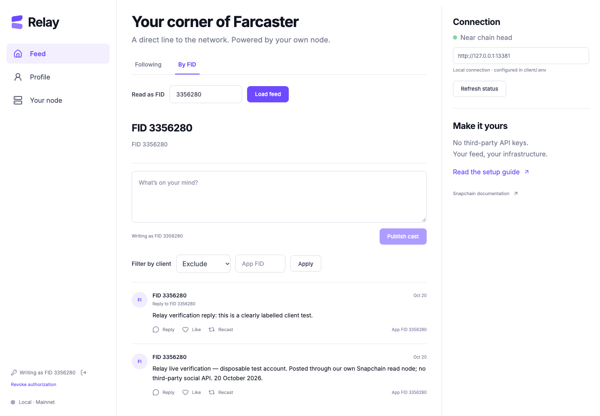

Explore the guide
Your node. Your feed.
Run a Farcaster node and client on your own infrastructure.
Three commands to start. A clear guide for everything after.
Used in the command only. This site sends it nowhere.
An already-running node at /opt/snapchain is checked only. For a new node, use the AWS path.
Provision compute
./relay provision --ack-costs --ssh-cidr YOUR_IP/32Start Snapchain
./relay nodeOpen Relay
./relay client
Run these from the repository folder on your computer.

Know what you are starting.
- 4 vCPU
- 16 GB RAM
- 2 TB SSD
Mainnet sync takes hours. Compute and storage cost money.
Before you start.
A short checklist makes the long sync less surprising.
On macOS or Linux, install Python 3.9+, OpenSSH, and Node.js 22.12+ or a newer supported LTS. The AWS path also needs AWS CLI v2 configured with your own account and permissions for EC2 and public SSM parameters. Windows users should use WSL2.
First download and unzip the source package, or clone your published copy of this repository, and open a terminal in its root folder. The three commands assume you already have the source and prerequisites.
What does the AWS command create?
One Ubuntu 22.04 m5.xlarge, a 2,000 GiB encrypted gp3 root disk at 125 MiB/s / 3,000 IOPS, an SSH key pair and a security group. It uses an existing default VPC/subnet; it does not create a VPC, NAT gateway, load balancer or paid monitoring.
SSH is limited to your IPv4 /32. Peer ports UDP 3382 and TCP 3383 are public. HTTP and metrics bind to the server's loopback; your client reaches HTTP through an SSH tunnel. Cloud credentials are used by AWS CLI on your computer, not copied to the server.
Understand the bill before provisioning
You pay for compute, the full 2 TB provisioned disk, public IPv4 and applicable transfer/taxes. Stopping EC2 does not stop disk charges. No automatic shutdown is installed. Check the AWS calculator for your region before using --ack-costs.
Preview the plan without AWS requests or resource creation:
./relay provision --ack-costs --ssh-cidr YOUR_IP/32 --dry-runNo Neynar or other third-party social API key is required. Existing accounts and storage are still needed to write; creating a new account is a separate paid protocol step.
Wait for the chain.
Then verify it.
Starting a container is the beginning.
The node downloads snapshot chunks, decompresses them, extracts state, then catches up with current blocks. Quiet extraction logs can still mean active progress. Avoid restarting a restore that is advancing.
./relay logsOnce it looks caught up, verify every shard in two samples and perform a real cast read:
./relay status --verify| Check | Required result |
|---|---|
| Each shard's blockDelay | Below 10 seconds in both samples |
| Each shard's maxHeight | Advances between samples |
| Real query | A cast is returned from the node |
The helper saves sanitized evidence in .relay-state/sync-evidence.json. While restoring, API requests may reset. A failed request alone is not proof that restore is progressing; check bounded logs and disk activity.
Make your first
round trip.
Your browser signs. Your node relays.
- Read first. Open your local Relay client. Choose By FID, enter
3, and load its profile and casts. Following combines a bounded batch of followees' latest casts; it is not a ranked recommendation feed. - Connect a disposable account. Use an existing test FID with active storage. Connect signer → Browser wallet must use that FID's custody wallet. Two typed signatures authorize a scoped Ed25519 key. Registration is gasless; account creation and storage are not.
- Publish a labelled test. Write a short test cast. Relay waits for a matching merge event before confirming it. Load your own FID and read it back. Replies, likes, recasts and follows use signed protocol messages too.
- Try both directions. Add and remove a like or recast; follow and unfollow an existing test target. Check the node's resulting state. An accepted relay response alone is not inclusion.
- Filter by app. Enter the requesting app's FID, choose Include only or Exclude and apply. Unknown/removed signer attribution is omitted from filtered results. Self-authorized keys are attributed to their user's FID, not a shared Relay app.
- Finish with revocation. Forget only clears this device's session. Revoke removes the network authorization and then clears the local key. Reimporting that revoked key should fail.
Existing signer and test recovery options
Existing signer accepts an already registered 32-byte Ed25519 app key. A wallet private key is not interchangeable with it. Test recovery derives the first Ethereum account from a disposable account's recovery phrase. Prefer a browser wallet. Never put a recovery phrase into this public tutorial.
The client keeps signing material in memory; reload forgets it. Imported keys retain their existing scopes and expiry. New keys use a 24-hour inactivity TTL. A pending confirmation is not a successful action; inspect the node before resubmitting.
The public guide never connects to your node or asks for keys. “Open local client” works only after you start Relay on your computer. The local proxy receives signed messages, not custody keys or recovery phrases.
Understand the pieces.
- FID
- Your permanent numeric account identifier. Your username can change.
- Custody wallet
- Controls the account and approves app keys. Keep it separate from routine posting keys.
- App signer
- A scoped Ed25519 key for everyday social actions. It can expire or be revoked.
- Read node
- Stores state, answers queries, and validates and relays signed writes. It does not vote.
- Validator
- Orders messages and participates in committing blocks. Running a read node earns no rewards.
- Storage
- Your account's protocol allowance, separate from the server's SSD capacity. Query current limits.
HTTP is the browser-friendly node API; gRPC also provides streaming. Messages need the SDK's exact encoded dataBytes. Events are separate notifications with limited retention. Key changes are confirmed by signer state; social actions by merge events. Read the current writing guide.
Proof, with limits.
Verified on our own mainnet node.
On 20 October 2026, disposable FID 3356280 exercised Relay against Snapchain 0.14.3. Actual messages were confirmed and read back. Test follows/reactions were reversed and all test app keys were revoked.
| Flow | Verified result |
|---|---|
| Cast and reply | Confirmed and read back |
| Like, recast and follow | Added and reversed |
| Signer lifecycle | Registered, imported, forgotten, reconnected, revoked |
| App filters | Include and exclude checked |
| Layouts | 390, 720 and 1440 px checked |
Inspect the public message hashes
Cast 0x4f8122235ed0a713b94f407cfdde8b55b35f0998
Reply 0xe1555d459cdba1b5d356d8bd29e1bcb1213545f3
To see these, load FID 3356280 in the local client. Full sanitized evidence is included in the source package's docs/LIVE-CLIENT-VERIFICATION.md.
Independent reproduction is still required. The new AWS provisioning path is covered by mocked acceptance tests; a fresh paid deployment has not been run. Live wallet testing used an automated custody-signing bridge, not a particular extension; positive recovery-phrase testing remains simulated. This is not a completed bounty submission.
When a step
doesn't land.
Keep progress. Find the cause.
SSH fails or the source address changed
Check that AWS CLI uses the intended account/region, the instance is running, your private key exists, and port 22 allows your current public IPv4 /32. A local sandbox permission error is not proof of a server firewall failure. Do not open SSH to the entire internet to diagnose it.
Provisioning was interrupted
Rerun the same command from the same folder. Local state records resource IDs and a stable EC2 client token. Do not delete .relay-state to “retry”: that can orphan resources. Check the AWS console before attempting a different state directory.
The API resets or sync is slow
Inspect ./relay logs, free disk and restore progress. Several hundred gigabytes must download and unpack. A read-node mempoolSize of 4294967295 means “not reported,” not a huge pending queue. Do not restart a progressing restore to try random tuning.
A port is already in use
Stop the local client/tunnel you started previously, or choose another RELAY_TUNNEL_PORT and PORT. The helper refuses to replace an unmanaged process occupying the tunnel port. It never kills unrelated processes.
Signer authorization, nonce or storage fails
Verify the custody wallet maps to the requested FID and that storage is active. Read the current nonce; do not guess zero. This release needs literal array brackets in requester nonce queries and wraps signer NotFound as HTTP 400. Relay handles both. Gasless EIP-712 domains differ from old onchain-key examples.
Submission stays pending
The read node retains no pending-message mempool. Relay re-gossips identical signed bytes at most twice while checking confirmation. Inspect the message hash and node state before submitting a new action. For keys, verify registration/revocation through unified signer reads.
Leave nothing
running by accident.
Cleanup is a deliberate step.
Revoke test keys, stop the local client with Ctrl-C, then close the managed tunnel:
./relay disconnectFor a server created by this helper, preview a stop without changing anything:
./relay stopIt prints the exact instance ID needed for --confirm. Stopping retains the disk and its charges. To permanently delete the managed instance and configured root disk, first preview:
./relay destroyOnly repeat with its matching --confirm ID after saving evidence and accepting permanent data loss. The helper verifies the ownership tag, waits for termination, and removes its recorded security group/key pair. Adopted servers cannot be stopped or destroyed by Relay. Partial-resource failures and retained volumes/snapshots still need inspection in AWS.
No shutdown timer, automatic deletion, host-wide Docker pruning, or paid monitoring is installed. You are responsible for stopping infrastructure and checking the final bill.